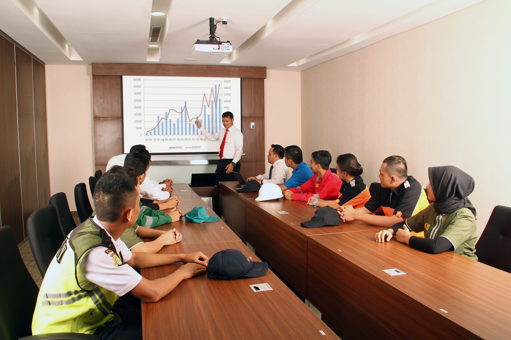
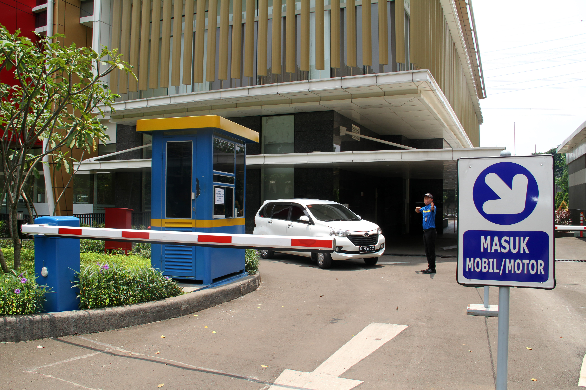

PT. Unopass Indojaya menghadirkan sistem manajemen parkir berbasis teknologi modern yang cepat, andal, dan transparan demi mengoptimalkan pendapatan bisnis Anda.

Corporate OverviewKami adalah perusahaan yang bergerak di bidang jasa pengelolaan perparkiran, solusi manajemen perparkiran masa depan yang digerakkan oleh teknologi dan dibangun di atas fondasi transparansi,Kami percaya bahwa pengelolaan parkir yang baik tidak boleh menjadi sebuah 'kotak hitam' yang penuh ketidakpastian. Dengan teknologi IoT (Internet of Things) dan integrasi pembayaran non-tunai yang kami miliki, kami mengubah lahan parkir konvensional menjadi aset digital yang menguntungkan, aman, dan dapat dipertanggungjawabkan datanya secara real-time.". inovasi infrastruktur.
Menjadi perusahaan penyedia jasa fasilitas yang menjalankan operasional usahanya dengan standar & komitmen usaha yang tinggi serta tersertifikasi.
Komitmen usaha kami adalah menciptakan hubungan kerja dengan mitra usaha yang saling menguntungkan, membentuk personil profesional yang terlatih, andal & peduli, mengikuti perkebangan teknologi dan informasi dalam proses usaha serta tanggap terhadapperubahan iklim industri
Layanan tata kelola perparkiran terintegrasi dan penyediaan fasilitas pendukung untuk efisiensi operasional maksimal bisnis Anda.
Menyediakan Pos Masuk/Keluar Konvensional maupun Manless berbasis teknologi pintar.
Personil operasional lapangan profesional, sigap, dan terlatih siap sedia di area.
Penyediaan tiket, komputer pos, barcode scanner, hingga kebutuhan operasional lengkap.
Pengurusan perizinan komprehensif, penyediaan asuransi, dan manajemen risiko klaim.
Pengadaan Sistem Parkir Carousel Vertikal/Mekanis cerdas tipe ARP-12 untuk lahan terbatas.
Penyediaan dan pengadaan berbagai peralatan kesehatan bersertifikasi untuk menunjang fasilitas mitra.
Menghadirkan keahlian teknis terbaik dan standar operasional bermutu tinggi secara konsisten.
Mengedepankan transparansi, kejujuran, dan akuntabilitas penuh di setiap lini kemitraan bisnis.
Peka terhadap kebutuhan unik mitra dengan sigap memberikan solusi serta pelayanan yang tulus.
Eksplorasi ekosistem teknologi pintar Unopass yang dirancang untuk efisiensi tinggi dan kenyamanan pengguna.
Otomatisasi pos masuk tanpa awak (Manless) dikombinasikan dengan pos keluar kasir yang cepat dan akurat untuk mencegah kebocoran data.

Sistem manajemen perparkiran berbasis cloud pintar untuk menjamin transparansi penuh dan akuntabilitas tata kelola pendapatan aset Anda.
Pantau arus kas masuk dan statistik volume kendaraan secara langsung (*live*) kapan saja dan di mana saja melalui gadget Anda.
Pengaturan tarif dinamis, sistem member/langganan, tarif inap, manajemen voucher diskon, hingga pembatasan hak akses user/kasir.
Rekam jejak digital terenkripsi untuk seluruh aktivitas admin dan kasir (buka laci, pembatalan transaksi, dll) demi mencegah kebocoran dana.
Analisis performa keuangan per lokasi dengan diagram intuitif yang dapat langsung diekspor ke format Excel dalam satu klik.
Standar perangkat keras dan ekosistem andal tinggi untuk stabilitas operasional jangka panjang.
| Kategori | Standar Spesifikasi Unopass | Nilai Unggul |
|---|---|---|
| Server & PC Pos | Standar performa andal tinggi berbasis Windows OS. Mudah dalam deteksi error lokal. | Cost-Efficient & Solutif |
| Network Switch | Switch Server dedicated profesional menggunakan brand ternama Allied Telesis untuk kelancaran data. | Enterprise Grade Stability |
| Deteksi Kendaraan | Vehicle Loop Detector presisi tinggi untuk membaca induksi magnetik kendaraan di atas aspal. | Akurasi & Proteksi Ganda |
| Cetak & Scan Pos | Kombinasi Printer Auto Cutter termal otomatis cepat serta perangkat Barcode Scanner responsif. | Durabilitas Heavy Duty |
| Akses & Interaksi | Integrasi Smartcard Reader (RFID/E-money) serta dilengkapi Speaker interaktif untuk panduan suara. | User-Friendly Interface |
Berbasis Windows OS andal, menawarkan penanganan teknis yang mudah dan efisiensi biaya.
Menggunakan perangkat switch data Allied Telesis untuk menjamin kestabilan sirkulasi data transaksi.
Sistem Vehicle Loop Detector magnetik akurat untuk mendeteksi posisi kendaraan secara real-time.
Dilengkapi Printer Auto Cutter termal otomatis anti-macet serta Barcode Scanner responsif.
Mendukung Smartcard Reader multi-emoney beserta sistem Speaker interaktif pemandu otomatis.
Infrastruktur andal yang telah dipercaya oleh pengembang properti papan atas nasional.